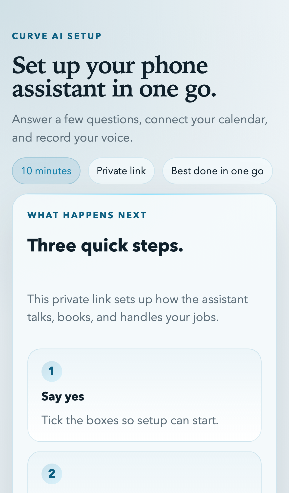
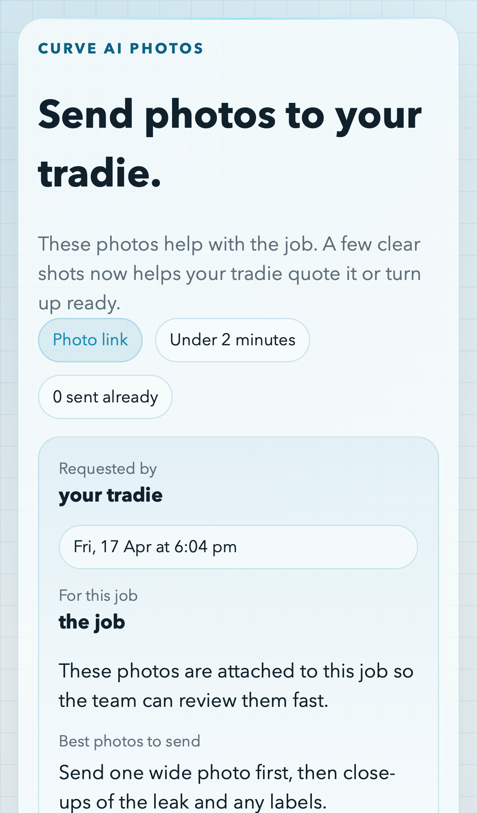
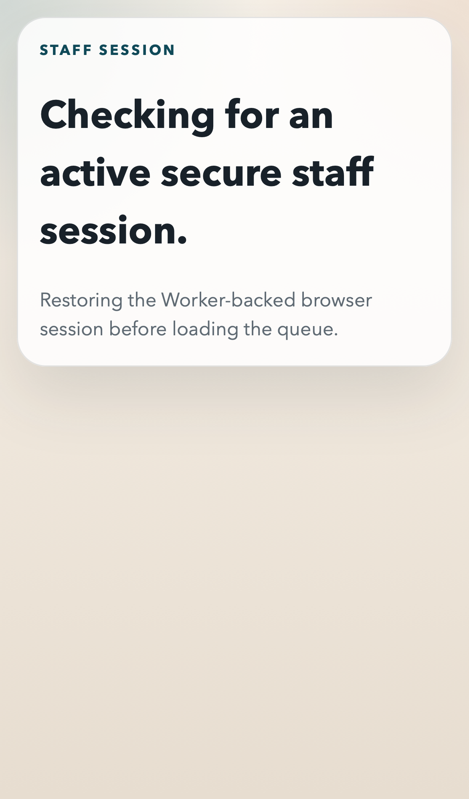
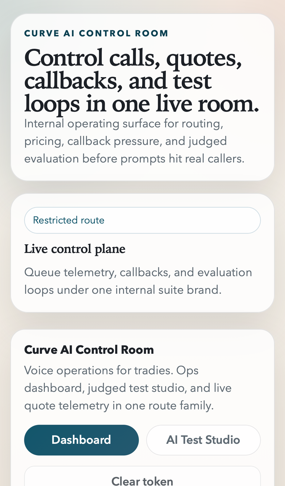
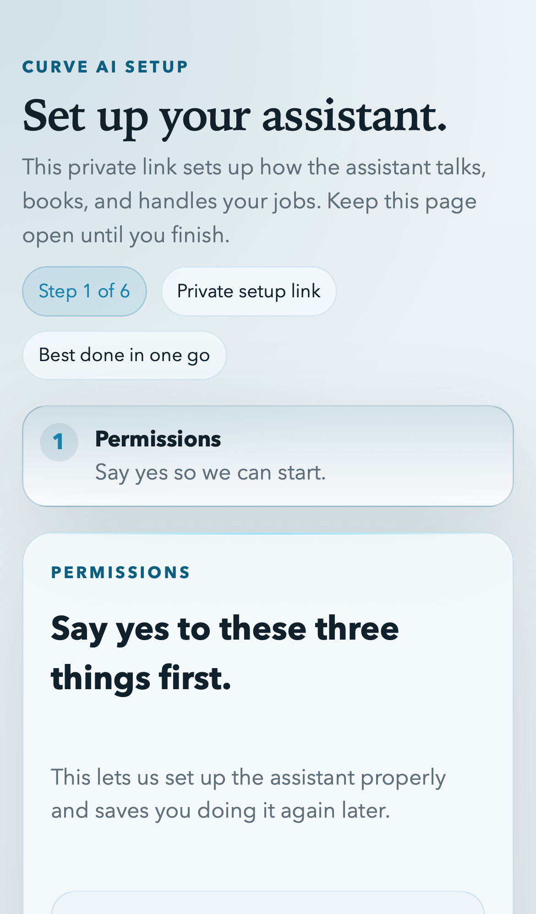

Voice operations for tradies
Curve AI is building the operating system for small trade businesses: AI voice handling, structured onboarding, customer photo capture, field execution, and internal evaluation in one phone-first stack.
The product today is a split Cloudflare Pages + Worker platform with public onboarding, public customer upload, a tradie field app, an internal ops console, and a test studio for evaluating agent behavior before it reaches customers.
Invite-driven onboarding captures business facts, pricing style, and staff preferences.
Voice tools create quotes, callbacks, appointments, and secure photo-upload requests.
Tradies see queue, job card, photos, notes, and setup progress in one field surface.
Internal staff monitor jobs, callbacks, pricing behavior, and judged AI test runs.
Repo-grounded summary from README, docs/mvp-board.md, docs/agent-log.md, and current Pages/Worker implementations.
Trades are still run through phones, memory, and fragmented admin
Small firms dominate
Australia has 410,602 construction firms, and 98.5% have fewer than 20 employees.
CEDA analysis of ABS business-count data.
Productivity is under pressure
Housing construction labour productivity is down 12% over roughly 30 years, while the broader economy is up 49%.
Productivity Commission, 2025.
The demand side is huge
Australia has roughly 11.2 million residential dwellings, giving the category a large installed base of homes and service demand.
ABS Total Value of Dwellings, June quarter 2024.
What breaks today
- Missed calls and after-hours enquiries leak jobs before quoting even starts.
- Customer context lives in heads, SMS threads, and disconnected tools.
- Photo requests, callbacks, and scheduling are manual and inconsistent.
- Small firms lack the process discipline and management tooling of scaled operators.
Why AI is a fit here
- Trades are still phone-driven, which gives voice AI a natural entry point.
- Most jobs follow recurring patterns: qualify, request evidence, book, quote, hand off.
- The highest-value memory is operational, not abstract: pricing rules, service area, customer history, and escalation logic.
The market is ready for a voice-first operating layer
In the year to June 2024, Australia spent $139 billion on housing construction, including $83 billion on new housing.
Australian governments aim to build 1.2 million homes over five years, which puts more pressure on field productivity.
The field service management software category is large already and still growing fast.
Grand View Research projects a 13.3% CAGR through 2030.
The enabling stack has arrived
- Realtime voice agents can now run structured service workflows, not just chat demos.
- Cloudflare-native app delivery keeps latency low and deployment operationally light.
- Portable model adapters let the core logic move over time toward Australian-hosted inference.
Curve AI’s timing advantage
- Start as workflow AI, not generic chatbot AI.
- Own the customer journey from first call through evidence capture and field handoff.
- Build evaluation in from day one so the product can harden before scale.
A four-surface AI operating system for trade businesses

Curve AI Setup
Invite-driven onboarding for voice, pricing, calendar, rules, and identity.

Curve AI Photos
Customer-safe photo collection with clear instructions and job context.

Curve AI Field Desk
Phone-first queue, setup, and job-card surface for tradies.

Curve AI Control Room
Internal queue management, callback oversight, and AI test operations.
Public
Onboarding and photo flows are guardrailed but simple enough for non-technical users.
Field
The staff app prioritizes mobile execution rather than admin-heavy desktop metaphors.
Internal
Ops can review jobs, callbacks, pricing behavior, and evaluation results in one place.
Unified brand
All four surfaces are tied together as one operating system, not disconnected tools.
The user journey is designed to feel simple even when the system behind it is not
This reflects the current Worker/Pages product shape, not a speculative future-state deck.
Memory and intelligence are the moat, not just the voice layer
Operational memory
- Staff memory: voice consent, communication style, pricing heuristics, calendar connection, service rules.
- Customer memory: normalized profile, jobs, calls, uploads, photos, callbacks, and appointments.
- Artifact memory: photo evidence and voice samples stored as durable assets.
- Evaluation memory: saved AI test cases and judged runs for regression testing.
Intelligence loops
- Realtime voice: route-specific tools for quotes, callbacks, bookings, and photo requests.
- Structured extraction: onboarding turns become editable operating profiles, not free-text notes.
- AI test studio: internal runner/judge loop exists today, with deeper real side-effect evaluation still in progress.
- Portable inference: provider adapters separate product logic from any one hosted model vendor.
D1
System-of-record for jobs, customers, uploads, sessions, cases, and runs.
R2
Photo evidence, voice artifacts, and related assets.
Durable Objects
Lightweight onboarding session coordination metadata today, with deeper orchestration still to come.
Shared contracts
One typed vocabulary across apps, providers, and evaluation flows.
Cloudflare-native frontend, Worker control plane, portable provider adapters
Delivery
- Separate Cloudflare Pages apps for onboarding, upload, staff, and ops.
- Phone-first UI and light entry bundles for fast public routes.
- Staging protection designed around Cloudflare Access and review gates.
Control plane
- Cloudflare Worker API as the shared backend boundary.
- D1 for durable state, R2 for assets, Durable Objects for lightweight session coordination.
- Structured logging, request IDs, signed tool routes, route guards, and tokenized uploads.
Adapters
- ElevenLabs realtime browser session adapter.
- Microsoft calendar adapter with local mock endpoints for integration testing.
- Twilio-style messaging adapter and OpenAI-compatible reasoning/test adapters.
What is real today
What is still being hardened
Each surface solves a concrete operational bottleneck
1. Guided Setup
Turn a tradie into an AI operator profile: business details, pricing style, exclusions, tone, voice consent, and the first pass of calendar setup.
2. Photo Request
Collect job evidence fast, with less back-and-forth. This is one of the cleanest ways to move from a voice interaction into a structured quote or callback.
3. Field Desk
Make the tradie app job-centric, not CRM-centric: next step, notes, customer context, photos, and quick actions first.
4. Control Room + Test Studio
Give internal operators a way to watch queues, tighten workflows, and run judged tests before deploying agent changes more broadly.

Setup is a product, not a settings page
That matters because onboarding is where agent quality, safety, and differentiation are actually created.
Customer evidence capture is part of the moat
Photos are a high-signal bridge between enquiry, pricing, dispatch, and field execution.
Market wedge starts with Australia’s fragmented trade base and expands into a global FSM category
Initial wedge is not enterprise field service. It is fragmented trade operators.
This is a software and process problem more than a headcount problem.
Australia’s residential footprint is large enough to support a substantial service-trade software layer.
Directional Australian revenue ceiling
- Initial wedge: Australian residential and light-commercial trade SMBs.
- Base count: 410,602 construction firms in Australia.
- Directional ceiling: if the full Australian construction-firm base eventually spent A$4k to A$12k ACV on this category, that implies roughly A$1.6B to A$4.9B of annual software revenue potential.
- Canonical caveat: this is a planning ceiling, not a present serviceable market claim, and the early reachable wedge is materially smaller.
Top-down category signal
- Global FSM software market estimated at US$4.91B in 2023.
- Projected to reach US$11.78B by 2030 at 13.3% CAGR.
- Curve AI is not trying to be generic FSM. It is carving the voice + workflow + evidence + evaluation layer for trade operators.
Win with a narrow wedge, then expand into the operating system
ICP
- 2-20 person trade businesses
- Residential-first or mixed residential/light commercial
- Phone-heavy lead intake
- Owner-operator or dispatcher-led workflows
Land
- After-hours call handling
- Secure photo requests for quote qualification
- Faster callback capture and tradie handoff
Expand
- Calendar booking
- Per-staff voice profiles and operating rules
- Evaluation, experimentation, and broader CRM/calendar integrations
Why this wedge works
The first ROI moment is easy to understand: fewer missed jobs, cleaner qualification, better evidence before dispatch, and less admin drag around callbacks and scheduling.
Channel logic
Founder-led sales, industry partnerships, trade associations, managed pilots with early operators, and strong case studies in the first verticals before broader rollout.
Proposed usage-led platform pricing with clear expansion paths
Core subscription
Per business or per staffed line for onboarding, field desk, control room, and memory infrastructure.
Usage
Voice minutes, provider costs, SMS, and AI evaluation volume can scale with customer value and operational load.
Expansion
Additional staff seats, additional lines, premium eval tooling, deeper integration packages, and enterprise workflow controls.
Canonical note
This repo does not yet encode a final commercial pricing model. These are investor-facing monetization paths implied by the current architecture and product shape, not already-shipped billing logic.
The moat is operational data, evaluation discipline, and integration depth
Why this can compound
- Every onboarding session produces structured operating logic.
- Every upload and job grows the customer evidence graph.
- Every judged test run improves the safety and quality of future deployments.
- Every provider adapter increases portability and reduces platform lock-in over time.
What competitors usually miss
- Generic voice demos without real field workflow.
- Traditional FSM without strong voice entry points.
- AI features without disciplined evaluation before release.
- Admin-heavy UX that fails in the cab, on site, or after hours.
What exists now, what comes next
Current repo-backed MVP
- Cloudflare Pages apps for onboarding, customer upload, staff, and ops.
- Cloudflare Worker API with D1, R2, auth routes, uploads, assets, jobs, and voice tools.
- Structured onboarding and extraction review.
- Phone-first staff field desk.
- Worker-backed AI test studio.
- Mock and configurable provider integration paths for ElevenLabs, Microsoft, Twilio, and OpenAI-compatible reasoning.
Next product hardening moves
- Production-grade Microsoft token and refresh-session model.
- Deeper real-provider rollout for calendar, messaging, and voice execution.
- AI test studio that exercises real Worker side effects instead of mainly simulated text behavior.
- More transactional persistence guarantees and stricter production security defaults.
- Later native iOS port if the field web app proves the right workflow.
This slide is intentionally split between “real now” and “next” to stay canonical to the current codebase.
The product shape is real; the remaining work is depth and hardening
Calendar depth
Microsoft connection exists in onboarding, but the staff-side calendar setup is still a temporary manual mapping step.
AI test realism
The test studio is real and persistent today, but it still leans too heavily on simulated text behavior instead of full route-side execution.
Provider hardening
Realtime voice, messaging, and calendar adapters are in place, with full production-grade credential and operational hardening still underway.
Why this matters for the deck
The strongest canonical story is not “everything is finished.” It is “the product shape is already live in-browser, and the remaining work is hardening execution depth rather than inventing the product.” The current onboarding flow also still behaves as a single active invite session rather than a fully resumable multi-device setup.
Curve AI can become the operating system for high-friction trade workflows
Why it matters
- The category is large, fragmented, and operationally messy.
- Voice is the natural entry point, but voice alone is not enough.
- The winning product is the one that remembers, evaluates, and coordinates the entire workflow.
Investor takeaway
- The product already exists as a browser-first Cloudflare MVP.
- The architecture is set up to harden into real provider-backed operations.
- The company can start in Australian trades and expand into a much larger global field-service software category.